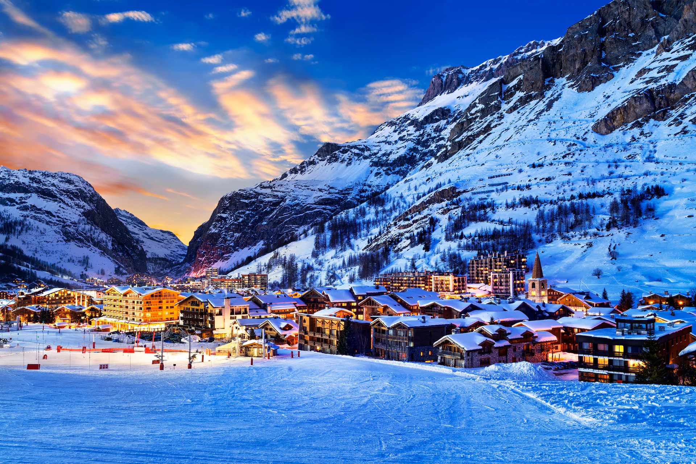
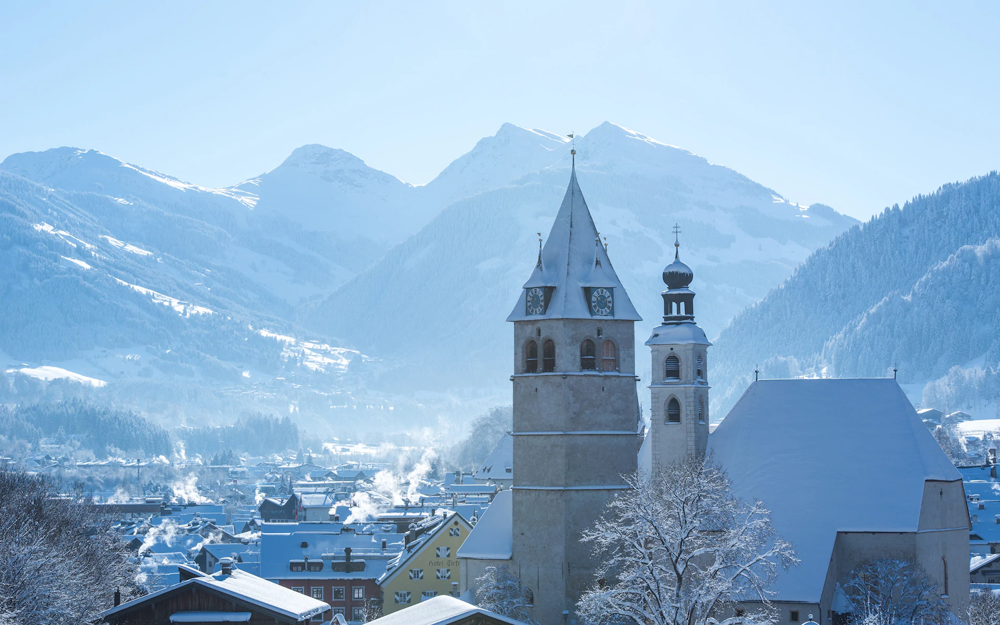

Latest snow reports: it looks set to be a white Christmas in the Alps as a week of snow storms transform skiing conditions. Avalanche reports: what seems to be the risk in the French Alps this week?

The northern Alps have had the best of the snowfall so far this season. Snow depths here are good but depths for more southern and eastern resorts of Italy and Austria remain below average. There’s been fresh snowfall across the higher Alpine mountains this past week but milder conditions have seen rain fall at lower altitudes challenging the already thin and patchy cover. It’s expected to get colder again for Christmas week with snow showers at times for the northern Alps, more settled to the south. If you’re looking for epic conditions then northwest USA or British Columbia in Canada is the place to go. Here there have been reports of more than two meters of fresh snowfall in places over the past week.
France
The past few days have seen fresh snowfalls of 10-20cm across much of the French Alps, though it has rained at the lowest altitudes. Méribel is reporting 50cm on lower slopes and 140cm at the top and Les Arcs 75cm lower and 145cm upper. Of special note is the midweek snowfall of up to 30cm for the Southern Alps, much improving conditions and helping add cover to otherwise generally thin and patchy lower runs. Risoul has 25cm on lower slopes and 45cm on upper. Looking to Christmas week and it’s unlikely Santa will be delivering much snow but instead more settled weather is forecast with a good amount of sunshine and slightly milder than average temperatures.
Austria
Mixed fortunes for Austria’s ski regions. Higher altitude resorts and upper slopes have been providing good sport with reasonable snow cover and periodic fresh snowfall and refreshed pistes. Lower areas have been struggling for cover and recent milder air and rain have not helped. Alpbach has 0cm on lower slopes and 50cm on upper, St Anton 45cm lower and 130cm upper. Forecasts are indicating milder air with rainfall below around 1,200m as we enter Christmas week. On the plus side this precipitation should fall as snow over the higher mountains with the potential for some significant accumulations. The second half of Christmas week looks to be cooler with the possibility of a little snow.